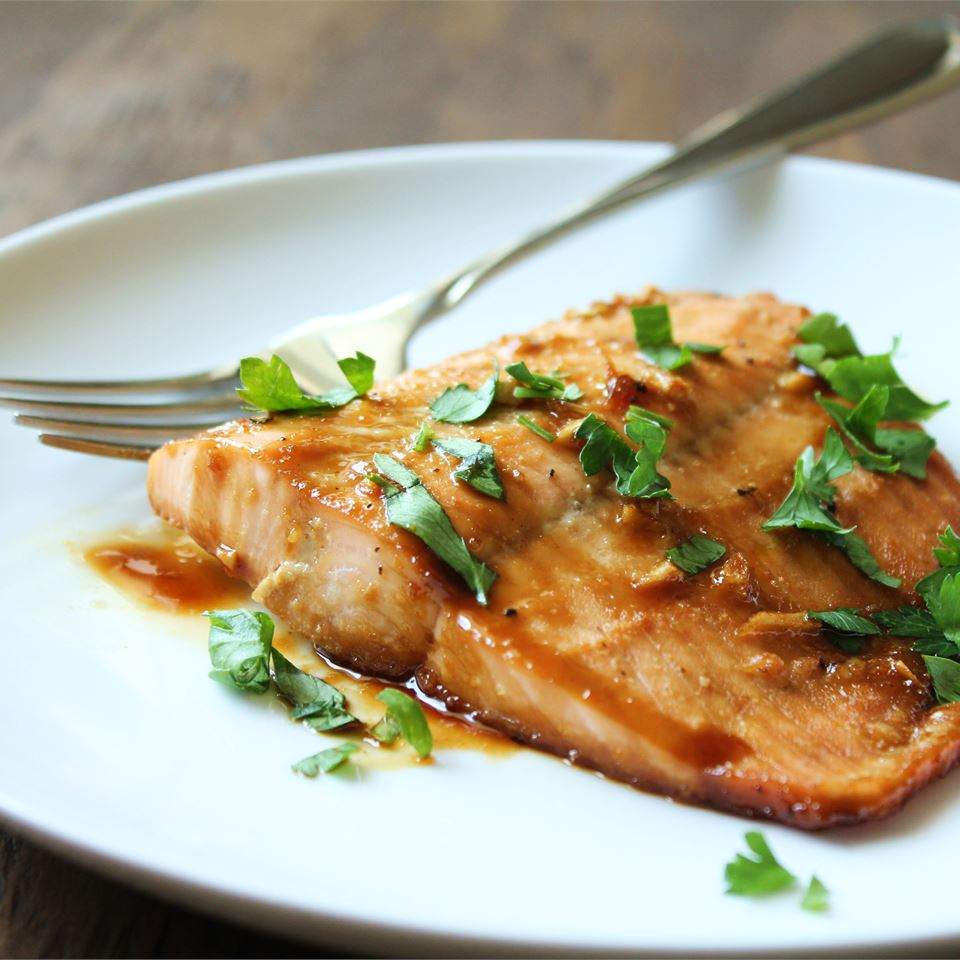

Maple Salmon

Ingredients
- ¼ cup maple syrup
- 2 tablespoons soy sauce
- 1 clove garlic, minced
- ¼ teaspoon garlic salt
- ⅛ teaspoon ground black pepper
- 1 pound salmon
Directions
- Stir together maple syrup, soy sauce, garlic, garlic salt, and pepper in a small bowl.
- Cut salmon into 4 equal fillets, place in a shallow glass baking dish, and coat with maple syrup mixture. Cover the dish and marinate salmon in the refrigerator for 30 minutes, turning once halfway.
- Preheat oven to 400 degrees F (200 degrees C).
- Place the baking dish in the preheated oven and bake salmon uncovered until flesh easily flakes with a fork, about 20 minutes.